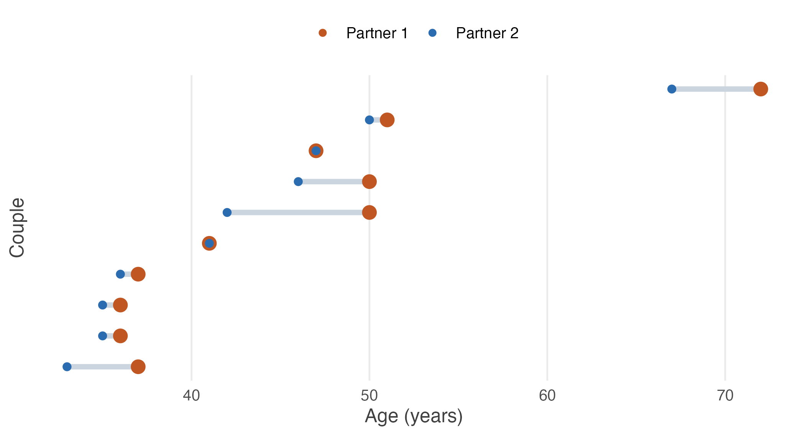

5.5 When two samples are not really two samples
Ten couples. Two columns of ages. Is that two samples?
Suppose we record the ages of both partners in ten married couples.
#> partner1 partner2
#> 1 36 35
#> 2 72 67
#> 3 37 33
#> 4 36 35
#> 5 51 50
#> 6 50 46
#> 7 47 47
#> 8 50 42
#> 9 37 36
#> 10 41 41Our question is simple: is partner 1, on average, older than partner 2?
At first glance this looks like a two-sample problem. There are two columns. There are ten observations in each. So why not perform the test we have just learned?
#>
#> Welch Two Sample t-test
#>
#> data: couples$partner1 and couples$partner2
#> t = 0.52, df = 18, p-value = 0.6
#> alternative hypothesis: true difference in means is not equal to 0
#> 95 percent confidence interval:
#> -7.537 12.537
#> sample estimates:
#> mean of x mean of y
#> 45.7 43.2The test finds essentially nothing: \(t = 0.52\) with \(p = 0.61\). On this evidence the two are the same age on average, and the interval for the difference runs from \(-7.5\) to \(12.5\) years.
Something is wrong
Look carefully at the data. In every couple, which partner is older?
| Couple | 1 | 2 | 3 | 4 | 5 | 6 | 7 | 8 | 9 | 10 |
|---|---|---|---|---|---|---|---|---|---|---|
| Older | P1 | P1 | P1 | P1 | P1 | P1 | same | P1 | P1 | same |
Partner 1 is older in eight couples. In the other two the partners are exactly the same age. Partner 2 is never older.
How can a statistical test look at that and return \(p = 0.61\)?
The answer is that we analysed the wrong problem.
What the two-sample test assumed
The two-sample \(t\)-test assumes the observations in one sample have nothing to do with the observations in the other. It treats the data as two unrelated collections of people:
\[\text{Partner 1:}\quad 36 \quad 72 \quad 37 \quad 36 \quad 51 \quad \ldots\] \[\text{Partner 2:}\quad 35 \quad 67 \quad 33 \quad 35 \quad 50 \quad \ldots\]
But they are not unrelated. Each observation belongs to a married couple, and within a couple the two ages are naturally linked. Someone who marries at 70 is likely to have a spouse around 70; someone who marries at 35 is likely to have a spouse around 35. The ages within a couple are strongly correlated.
Two sources of variation
There are two quite different sources of variation in this dataset, and only one of them is of any interest.
Variation between couples. Some couples are in their thirties, some in their fifties, one in their seventies. These differences are enormous.
Variation within couples. Partners usually differ by only a few years. This is the variation we actually care about.
The two-sample test mixes them together. The between-couple variation dominates the calculation and hides the small but remarkably consistent within-couple differences.
Seen properly, the structure is obvious.

Figure 5.1: Ten couples, ordered by the age of partner 2. Each segment joins the two partners in one couple. The couples span nearly forty years between them; within any couple the gap is at most eight. Two couples are the same age, and show as a red ring around a blue centre.
The figure explains both results at once. Vertically, the couples are spread across nearly forty years — that is the variation the unpaired test measures the gap against, and it is overwhelming. Horizontally, within each couple, the red point is at or to the right of the blue one every single time, and never more than eight years away. That small, utterly consistent gap is what a paired test measures.
Removing what we do not care about
Instead of comparing all the partner 1s with all the partner 2s, compare each person with their own partner. Compute the difference for every couple.
#> [1] 1 5 4 1 1 4 0 8 1 0Now something worth pausing on has happened. The ages of the couples have disappeared completely.
The couple aged 72 and 67 contributes \(72 - 67 = 5\). The couple aged 36 and 35 contributes \(36 - 35 = 1\). It no longer matters whether a couple is young or old — subtracting removes the between-couple variation automatically, because it was common to both columns.
Only the within-couple difference remains, and that is exactly the quantity we wanted to study.
The statistical model
Let
\[d_i = x_i - y_i\]
where \(x_i\) is the age of partner 1 in couple \(i\) and \(y_i\) is the age of partner 2 in the same couple.
Instead of two samples, we now have one sample of differences \(d_1, d_2, \ldots, d_n\). Our parameter of interest is
\[\mu_d = E(d)\]
the population mean difference.
Setting up the hypotheses
If we simply want to know whether the average ages differ,
\[H_0 : \mu_d = 0 \qquad H_A : \mu_d \neq 0\]
If we specifically suspect partner 1 is older, the alternative is one-sided, as in Section 4.8:
\[H_0 : \mu_d \leq 0 \qquad H_A : \mu_d > 0\]
Notice that the hypotheses are no longer about two population means. We are not testing \(H_0: \mu_1 = \mu_2\).
We are testing whether the average difference equals zero — a claim about a single parameter, which is why the machinery of Unit 4 applies unchanged.
Estimating the mean difference
The sample mean difference is
\[\bar{d} = \frac{1}{n}\sum_{i=1}^{n} d_i\]
and the sample standard deviation of the differences is the ordinary one from Section 3.2, applied to the \(d_i\):
\[s_d = \sqrt{\frac{\sum_{i=1}^{n}(d_i - \bar{d})^2}{n-1}}\]
#> n d_bar s_d se
#> 10.0000 2.5000 2.6352 0.8333So \(\bar{d} = 2.5\) years and \(s_d = 2.635\) years.
The test statistic
Under the null hypothesis \(\mu_d = 0\),
\[t = \frac{\bar{d} - 0}{s_d / \sqrt{n}}\]
This is exactly the one-sample \(t\) statistic from Section 4.7, with \(d\) in place of \(x\). Substituting,
\[t = \frac{2.5}{2.635/\sqrt{10}} = \frac{2.5}{0.833} = 3.00\]
and under \(H_0\) this follows \(t_{n-1}\), so with \(n = 10\) we have \(df = 9\).
t_calc <- mean(d) / (sd(d) / sqrt(length(d)))
c(t_calc = t_calc,
df = length(d) - 1,
t_crit = qt(0.975, df = length(d) - 1),
p_value = 2 * pt(-abs(t_calc), df = length(d) - 1))#> t_calc df t_crit p_value
#> 3.00000 9.00000 2.26216 0.01496Since \(3.00 > 2.262\), we reject \(H_0\) at the 5% level. The two-sided \(p\)-value is 0.015.
Confidence interval
A 95% interval for the mean difference is
\[\bar{d} \pm t_{\alpha/2,\,n-1}\,\frac{s_d}{\sqrt{n}}\]
#> [1] 0.6149 4.3851Partner 1 is between about 0.6 and 4.4 years older, on average. The interval excludes zero, agreeing with the test as always.
Doing it in R
Everything above can be had two ways. Either compute the differences yourself and run a one-sample test,
#>
#> One Sample t-test
#>
#> data: d
#> t = 3, df = 9, p-value = 0.01
#> alternative hypothesis: true mean is not equal to 0
#> 95 percent confidence interval:
#> 0.6149 4.3851
#> sample estimates:
#> mean of x
#> 2.5or let R take the differences for you:
#>
#> Paired t-test
#>
#> data: couples$partner1 and couples$partner2
#> t = 3, df = 9, p-value = 0.01
#> alternative hypothesis: true mean difference is not equal to 0
#> 95 percent confidence interval:
#> 0.6149 4.3851
#> sample estimates:
#> mean difference
#> 2.5The two are the same test, because paired = TRUE does nothing more than
subtract the columns and run the one-sample test on the result.
Why did the answer change so much?
Notice what changed, and what did not.
| Analysis | Treats the observations as | \(p\)-value |
|---|---|---|
| Two-sample \(t\)-test | Twenty unrelated people | 0.61 |
| Paired \(t\)-test | Ten differences within couples | 0.015 |
The data never changed. The same ten couples were analysed twice. The only difference was whether the analysis respected the way the data were collected.
The algebra shows exactly what pairing removes. Write each age as
\[x_i = \mu + \alpha_i + \delta_i \qquad\qquad y_i = \mu + \alpha_i + \varepsilon_i\]
where \(\mu\) is the overall average age, \(\alpha_i\) captures whether couple \(i\) is generally young or old, and \(\delta_i\) and \(\varepsilon_i\) are the remaining individual departures.
The term \(\alpha_i\) is what makes the columns so variable: it ranges across nearly forty years in these data. Crucially, it is the same \(\alpha_i\) in both expressions, because both partners belong to the same couple.
Taking differences,
\[ \begin{aligned} d_i &= x_i - y_i \\[4pt] &= (\mu + \alpha_i + \delta_i) - (\mu + \alpha_i + \varepsilon_i) \\[4pt] &= \delta_i - \varepsilon_i \end{aligned} \]
Both \(\mu\) and \(\alpha_i\) cancel. The large between-couple effect disappears entirely, and the differences carry only the within-couple departures.
That is why the paired test is so much more powerful. It is not measuring a smaller quantity more cleverly; it is measuring the same quantity against a much smaller standard error.
The standard deviations make the point numerically:
round(c(sd_partner1 = sd(couples$partner1),
sd_partner2 = sd(couples$partner2),
sd_of_diffs = sd(d)), 3)#> sd_partner1 sd_partner2 sd_of_diffs
#> 11.156 10.174 2.635Each column varies by about eleven years. The differences vary by 2.6. The unpaired test measured a 2.5-year gap against eleven years of noise and saw nothing; the paired test measures it against 2.6 and finds it clearly.
When should we use a paired test?
A paired test is appropriate whenever the two measurements belong to the same unit. Typical cases:
- before and after measurements on the same patients;
- yields from the same plots under two fertilisers in successive seasons;
- examination scores of the same students before and after a training programme;
- the same households interviewed in two survey rounds;
- twins, or matched pairs, receiving different treatments.
The common feature is that every observation in one column has a natural partner in the other. The analysis should therefore focus on the difference within each pair, not on the two columns separately.
The reverse error is also possible. If the two columns are not paired — 45
government school students and 52 private school students, say — then there is
no natural partner for anyone, paired = TRUE will pair them by row number,
which is meaningless, and R will simply refuse if the lengths differ.
Pairing is a fact about how the data were collected, not an option to try.
A paired \(t\)-test is not a special kind of two-sample \(t\)-test. It is a one-sample \(t\)-test applied to the differences between paired observations.
If you remember one sentence from this section, it should be that one.
| One-sample \(t\)-test | Paired \(t\)-test | |
|---|---|---|
| Data | \(x_1, \ldots, x_n\) | \(d_1, \ldots, d_n\) where \(d_i = x_i - y_i\) |
| Parameter | \(\mu\) | \(\mu_d\) |
| Null | \(H_0: \mu = \mu_0\) | \(H_0: \mu_d = 0\) |
| Statistic | \(t = \dfrac{\bar{x} - \mu_0}{s/\sqrt{n}}\) | \(t = \dfrac{\bar{d}}{s_d/\sqrt{n}}\) |
| Degrees of freedom | \(n - 1\) | \(n - 1\) |
Read across the rows. There is no new mathematics here at all — only a new first step, in which two columns become one.